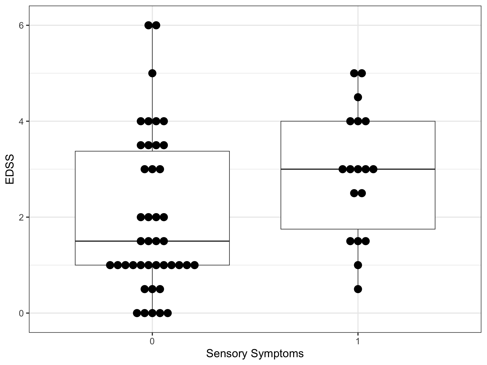

| ID | Gender | Age | Age.of.onset | EDSS | Does.the.time.difference.between.MRI.acquisition.and.EDSS…two.months | Types.of.Medicines | Presenting.Symptom | Dose.the.patient.has.Co.moroidity | Pyramidal | Cerebella | Brain.stem | Sensory | Sphincters | Visual | Mental | Speech | Motor.System | Sensory.System | Coordination | Gait | Bowel.and.bladder.function | Mobility | Mental.State | Optic.discs | Fields | Nystagmus | Ocular.Movement | Swallowing |
|---|---|---|---|---|---|---|---|---|---|---|---|---|---|---|---|---|---|---|---|---|---|---|---|---|---|---|---|---|
| 1 | F | 56 | 43 | 3.0 | No | Gelenia | Motor | No | 0 | 0 | 0 | 0 | 0 | 0 | 0 | 0 | 1 | 1 | 0 | 0 | 0 | 0 | 0 | 1 | 0 | 1 | 0 | 0 |
| 2 | F | 29 | 19 | 1.5 | No | Gelenia | Sensory | No | 0 | 0 | 0 | 0 | 0 | 0 | 0 | 0 | 1 | 1 | 0 | 0 | 0 | 1 | 0 | 0 | 0 | 0 | 0 | 0 |
| 3 | F | 15 | 8 | 4.0 | No | Tysabri | Motor | No | 1 | 1 | 0 | 0 | 0 | 1 | 0 | 0 | 1 | 0 | 1 | 0 | 0 | 0 | 0 | 1 | 0 | 0 | 0 | 0 |
| 4 | F | 24 | 20 | 6.0 | No | Tysabri | Sensory | No | 1 | 1 | 1 | 0 | 1 | 0 | 0 | 0 | 1 | 0 | 1 | 1 | 0 | 0 | 0 | 0 | 0 | 0 | 0 | 0 |
| 5 | F | 33 | 31 | 0.0 | No | Avonex | Pain | No | 0 | 0 | 0 | 0 | 0 | 0 | 0 | 0 | 0 | 0 | 0 | 1 | 0 | 0 | 0 | 0 | 0 | 0 | 0 | 0 |
| 6 | F | 44 | 40 | 5.0 | No | Avonex | Motor | No | 0 | 0 | 0 | 0 | 0 | 0 | 0 | 0 | 1 | 0 | 1 | 1 | 1 | 0 | 0 | 0 | 0 | 1 | 0 | 0 |
| 7 | M | 43 | 40 | 3.5 | No | Betaferon | Motor & Visual | No | 0 | 1 | 0 | 0 | 0 | 0 | 1 | 0 | 1 | 1 | 1 | 0 | 0 | 1 | 0 | 1 | 0 | 0 | 0 | 0 |
| 8 | F | 32 | 30 | 1.0 | No | Gelenia | Visual | No | 0 | 0 | 0 | 0 | 0 | 0 | 0 | 0 | 0 | 0 | 0 | 0 | 0 | 0 | 0 | 0 | 0 | 0 | 0 | 0 |
| 9 | F | 36 | 33 | 6.0 | No | Gelenia | Motore | No | 1 | 0 | 0 | 0 | 0 | 0 | 0 | 0 | 1 | 0 | 1 | 1 | 0 | 0 | 0 | 0 | 0 | 1 | 0 | 0 |
| 10 | F | 39 | 35 | 3.0 | No | Betaferon | Motor & Behavioural | No | 1 | 0 | 0 | 0 | 0 | 1 | 0 | 0 | 1 | 0 | 0 | 0 | 0 | 0 | 0 | 1 | 0 | 0 | 0 | 0 |
Ordinal Logistic Regression for Ordinal Outcomes?
analysis
concept
code
logistic
modelling
The proportional odds model is the best choice when we are regressing an ordinal outcome.
1 Some Background
It has become clear to me over the years that there is usually no one correct way to kick a statistical goal - several approaches might all converge to the same “best” answer. To that end it’s also often difficult to identify an unequivocally incorrect way to do something. So data analysis is not black and white - there are shades of grey (not 50 though). However, there are some approaches that are well-intentioned but ill-considered and some that are performed purely as shortcuts - whether that be for the sake of time or simplicity. Both conditions can lead to results and their interpretation that are misleading at best.
Where am I heading with this? Well, today’s post is based on something as fundamental as the scale that we use to measure or record our data on. It might be good at this point to take a few moments to look over the following link (there is no point in me re-inventing the wheel as Harvey Motulsky - the author of Prism - explains things so eloquently):
This page describes a ‘hierarchy’ of measurement/variable scales (nominal -> ordinal -> interval -> ratio) as well as their differences. If you’re unfamiliar with these concepts, it would be worthwhile brushing up on them as they are integral to the discussion that follows.
2 The Debate
There is a long-standing debate in the statistical literature that continues to simmer in the background, and I would guess depending on which camp you align yourself with, you are guilty of egregious statistical crimes from the other. The debate centres around the question of:
Can you ever treat ordinal data as if it were interval?
An ordinal variable is one that - like an interval (numeric) variable - contains numbers, but is in fact a set of ordered categories. So, the numbers that are attached to an ordinal variable aren’t really quantitative, but instead describe the order of responses, not the actual numeric value. Ordinal variables are typically ratings or rankings - good examples are Likert scales and patient reported outcomes (PRO’s). Think of the difference between a Pain Scale (1-10) and human weight in kg.
One camp will maintain that as ordered categories, the intervals between the values on the Pain Scale are not equal. That is, we cannot say with confidence that the increase in pain that a patient feels going from a score of 2 to 3, is the same increase they would feel in going from a score of 7 to 8. As a corollary, however, we can say that the increase in weight with each additional kg remains the same across all values. Consequently, this camp also maintains that any mean, correlation, or other numerical test applied to these ordered categorical numerals is invalid and only non-parametic statistics are really appropriate. Some references I’ve found in support of this camp are here, here and here.
The other camp will acknowledge that while ordinal variables may not conform to all the regular assumptions of interval variables, parametric tests can still be practically valid and informative in many situations. Additionally, they’re usually easier to run and easier to communicate. Similarly, some references I’ve found in support of this camp are here, here and here.
So, who’s right?
The answer is ‘Yes’.
Facetiousness aside, I don’t really have an answer for this. My feeling is that it ultimately depends on the research question at hand, the assumptions you are willing to make, and the robustness of your position and justification in doing so. I will concede that I always find it easier to deal with analyses that assume variables are continuous (and by definition at least interval in nature in the scale measurement hierarchy). That aside, I start to feel uncomfortable when you can’t reasonably justify the equivalence of interval differences and especially so when working with small scales where there might only be half a dozen values. In these cases, I really think it’s a bit of a stretch to use parametric statistics.
3 Analysis Options
Without taking a hard stance one way or the other, and considering that there is some nuance to this debate, I want to now change tack and explain what you can do if you are unsure as to the best approach to analyse your ordinal-scale data. I am not going to delve into the descriptive and simple hypothesis statistics side of things where you can easily choose non-parametric alternatives to what you commonly use. For example, medians and interquartile ranges vs means and standard deviations; and Mann-Whitney U tests instead of t-tests. A quick Google search will easily find you lots of information on this.
Instead I want to focus on regression models, as this is where some confusion can set in. It’s important to note that all of this is really only relevant in relation to your outcome (i.e dependent) variable - you can have variables on different scales as predictors and still run a linear regression if your outcome is interval (or ratio) in nature.
So, what can we do if we want to regress an ordinal variable on a set of predictors?
3.1 Load and Inspect the Data
We first need to load some data to experiment on, and we’ll use the same publicly available MS dataset that we used in the last post. So if you want to run the code yourself you will first need to download the data from:
This dataset contains the demographic and clinical data on 60 patients (MRI data in accompanying datasets available at link).
Let’s have a look at the first few lines:
Let’s say we want to regress EDSS on Sensory (the presence of sensory symptoms). In the first instance it’s always good to visualise the data, so let’s do that by using some boxplots. It appears that sensory symptoms are associated with higher EDSS - eyeballing the plot suggests that the median EDSS is ~ 1.5 in the absence of Sensory symptoms and ~ 3 when Sensory symptoms are present.
Code
library(ggplot2)
library(tidyverse)
library(gtsummary)
library(ordinal)
library(ggeffects)
ggplot(dat, aes(x = factor(Sensory), y = EDSS)) +
geom_boxplot() +
geom_dotplot(binaxis = 'y', stackdir = 'center', position = position_dodge(1), dotsize = 0.8) +
xlab("Sensory Symptoms") +
theme_bw(base_size = 20)
3.2 Linear Regression
One way to model the association between the two variables would be to simply treat EDSS as a numeric variable. That’s very straightforward and I’m sure you’ve run a linear regression model before. I’ll use the gtsummary package that I highlighted in the last post to format the results.
| Characteristic | Beta | 95% CI1 | p-value |
|---|---|---|---|
| (Intercept) | 2.0 | 1.5, 2.5 | <0.001 |
| Sensory | 0.93 | 0.05, 1.8 | 0.038 |
| 1 CI = Confidence Interval | |||
While we are now estimating means and not medians, the model results are mostly in line with trend observed in the boxplot. The EDSS in the reference group (no symptoms) is on average, 2.0, and the difference in EDSS in the group with symptoms is an additional 0.93 units (i.e. 2.9 on average).
There is nothing too difficult about that - if you are willing to accept that the difference between any two equally spaced EDSS scores has about the same clinical impact on the patient, and you are willing to accept the assumptions that go along with linear regression.
3.3 Ordinal Logistic Regression
An alternative approach to model the association between the two variables is to treat EDSS as an ordinal variable. Ordinal logistic regression (using the proportional-odds or the cumulative-logit model) may be used with an outcome variable that consists of three or more categories to model the cumulative probability of falling in any particular category or those below, versus all categories above. In other words we are considering cumulative probabilities up to a threshold, thereby making the whole range of ordinal categories binary at that threshold. Another way to think about the cumulative-logit model is that it essentially consists of a set of binary logistic regression models for each possible binary dichotomisation (i.e. threshold/cut-point) of the ordinal outcome. For example, in the simplest case of an (ordered) three-category outcome, there are two possible thresholds and thus two possible binary logistic regression models. The proportional-odds model allows a comparison of category 1 vs categories 2-3, and simultaneously categories 1-2 vs 3, producing a kind of averaged or summary odds ratio reflecting one overall ‘effect’ estimate (if one traditionally considered ‘important’ assumption is met - more on this soon).
Conceptually, the proportional-odds model is based on the idea of a continuous latent outcome - think of a normal distribution. While we cannot observe or measure this construct, the actual observed ordered categories are mapped to this latent continuous variable and used in the model estimation process. In addition to the ‘effect’ estimates for each predictor in the model, a series of intercepts (which represent the thresholds or cutpoints) are also typically reported, depending on your software. Let’s actually run one of these models now.
There are a couple of packages in R that estimate proportional-odds models and today we’ll use the ordinal package. The essential function here is clm(). An important thing to note with these models is that your outcome has to be formatted as a factor. The basic specification is simple and in line with typical R models:
clm(EDSS ~ Sensory, data = dat, link = "logit")
We will format our results using the excellent gtsummary package I introduced you to in the last post.
Code
| Characteristic | OR1 | 95% CI1 | p-value |
|---|---|---|---|
| 0|0.5 | 0.12 | <0.001 | |
| 0.5|1 | 0.23 | <0.001 | |
| 1|1.5 | 0.81 | 0.5 | |
| 1.5|2 | 1.36 | 0.3 | |
| 2|2.5 | 1.82 | 0.062 | |
| 2.5|3 | 2.12 | 0.022 | |
| 3|3.5 | 3.91 | <0.001 | |
| 3.5|4 | 5.62 | <0.001 | |
| 4|4.5 | 14.6 | <0.001 | |
| 4.5|5 | 18.0 | <0.001 | |
| 5|6 | 47.7 | <0.001 | |
| factor(Sensory) | |||
| 0 | — | — | |
| 1 | 3.08 | 1.18, 8.31 | 0.024 |
| 1 OR = Odds Ratio, CI = Confidence Interval | |||
So let’s not worry too much about the intercepts and instead just focus on the OR for the predictor of interest (Sensory). The basic interpretation of this is that sensory symptoms are associated with higher EDSS - specifically, there is an ~ 3-fold increase in the odds of having a higher EDSS vs a lower EDSS at any of the possible cutpoints that result in a hypothetical dichotomisation of the data. An example of this might be a group of patients with EDSS above 2 vs below 2, or equivalently a group of patients with EDSS above 5 vs below 5. Note that we are getting the same direction of effect that we observed with a simple linear regression (really, we shouldn’t have expected anything else).
Now, let’s talk about model assumptions. Compared to the linear regression model, the proportional-odds model is relatively assumption-free. This actually makes it an alternative modelling option even for continuous (interval) outcomes when these fail to meet the standard assumptions (mostly to do with model residuals). This has been described here. There is one assumption, however, that has historically been deemed important to the validity of the proportional-odds model, and that is aptly called the proportional odds assumption. In a nutshell, violation of this assumption suggests that the association of predictor variable with the ordinal outcome depends on the level (category) of the outcome. Hence, the assumption of a single summary OR then supposedly becomes untenable.
There are a couple of ways to test the proportional-odds assumption and the simplest is with the Brant-Wald test. A p-value of less than 0.05 on this test — particularly on the Omnibus plus at least one of the variables (if you have multiple predictors) — should be interpreted as a failure of the proportional odds assumption.
Brant Test:
chi-sq df pr(>chi)
Omnibus 17.3 10 0.068 .
factor(Sensory)1 17.3 10 0.068 .
---
Signif. codes: 0 '***' 0.001 '**' 0.01 '*' 0.05 '.' 0.1 ' ' 1
H0: Proportional odds assumption holdsThis is a very simple model, so I would have hoped that the test would pass. But I must say that I have not had a lot of luck in my own experience - proportional-odds fail by this test more often than they pass. It does seem well known, however, that the test can falsely reject the null hypothesis that the assumption is satisfied, leading to an incorrect conclusion that the analysis is invalid. On this topic, I am willing to pay more attention to what Frank Harrell on his blog (not that I am using it as a get-out-of-jail-free card):
Violation of Proportional Odds is Not Fatal
One last thing before we finish this section. I’m an advocate of not just stopping at the model results. Model coefficients tell you something, for sure - the ‘effect’ on the outcome of a one-unit change in the predictor. But that doesn’t really tell you what the predicted values of the outcome (for given values of the predictor) actually are. So I always think it’s a good idea to plot the model predictions. Let’s do that now with the following code:
Code
# Create new dataframe to predict on
newdat <- data.frame(Sensory = c(0, 1)) |>
mutate(Sensory = factor(Sensory))
# Predict on the linear (log-odds) scale
mod2predict <- cbind(newdat, predict(mod2, newdat, interval = T, type = "prob"))
# Put estimated probabilities into long format
dat_long_est <- mod2predict |>
pivot_longer(2:13,
names_to = "outcome_val",
values_to = "pred_prob") |>
select(Sensory, outcome_val, pred_prob)
# Put estimated lower CI into long format
dat_long_lowerci <- mod2predict |>
pivot_longer(14:25,
names_to = "outcome_val",
values_to = "pred_lowerci") |>
select(Sensory, outcome_val, pred_lowerci)
# Put estimated upper CI into long format
dat_long_upperci <- mod2predict |>
pivot_longer(26:37,
names_to = "outcome_val",
values_to = "pred_upperci") |>
select(Sensory, outcome_val, pred_upperci)
# cbind together
dat_long <- cbind(dat_long_est, dat_long_lowerci[3], dat_long_upperci[3])
# Create EDSS variable from outcome_val
dat_long <- dat_long |>
mutate(EDSS = as.numeric(str_sub(outcome_val, 5, -1)))
# Plot
ggplot(dat_long, aes(x = EDSS, y = pred_prob)) +
geom_point(aes(color = Sensory), position = position_dodge(width = 0.4), size = 2) +
geom_errorbar(aes(ymin = pred_lowerci, ymax = pred_upperci, color = Sensory), position = position_dodge(width = 0.4), width = 0.4, linewidth = 0.8) +
scale_x_continuous(limits = c(0, 6), breaks = seq(0, 6, by = 0.5)) +
scale_y_continuous(limits = c(0, 1), breaks = seq(0, 1, by = 0.1)) +
scale_color_manual(values = c("#E69F00", "#56B4E9")) +
xlab("EDSS") + ylab("Predicted Probability") +
theme_bw(base_size = 20)This shows the predicted probability of having each level of EDSS, stratified by the presence or absence of sensory symptoms. Compared to being symptom-free, the presence of sensory symptoms are associated with higher predicted probabilities as one’s EDSS increases.
4 What About EDSS?
So I’ve used EDSS in the example today, but I’ve skirted around the idea of how it should really be treated in analyses as an outcome. Where does EDSS fit into all of this? I don’t know the answer to this either. I tried doing a literature search for how EDSS has been considered analytically in scientific studies and I didn’t come up with a lot, but I get the feeling it is most often treated as an interval variable. The following paper found:
https://www.ncbi.nlm.nih.gov/books/NBK395612/
Our study indicates that EDSS trajectory can be modelled using multilevel models. In all models, there was no strong evidence of non-normality of residuals and, therefore, no need to consider further transformations of EDSS score. We also found no evidence against the use of the EDSS score as a continuous variable, rather than an ordinal outcome (as it was designed), in that the models with EDSS score as a continuous outcome appeared to predict EDSS score well. There was evidence that intraindividual variability in EDSS score was greater for lower EDSS scores, as previously suggested.
I would be interested to hear people’s thoughts on how they feel EDSS should be treated in statistical analyses…